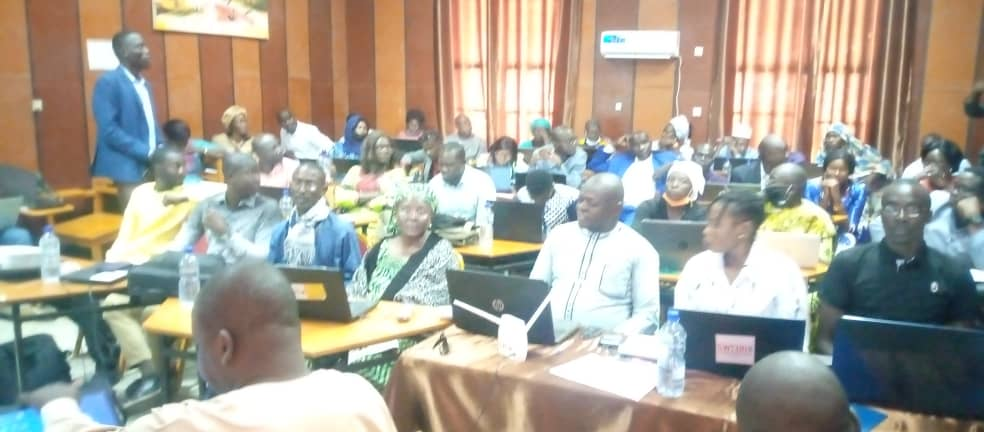

Qui sommes-nous ?
Partenaire de votre excellence opérationnelle
Le Cabinet Suivi & Évaluation est une équipe d’experts dédiés à l’accompagnement des organisations dans la gestion, le suivi et l’évaluation de leurs projets afin d’en maximiser l’impact. Situé au cœur de N’Djamena, Tchad, nous sommes fiers d’offrir une gamme de services spécialisés destinés à optimiser la gestion de l’information, le suivi-évaluation et la cartographie pour des organisations de toutes tailles et de tous secteurs.
Notre mission
Notre mission est de fournir des solutions sur mesure qui répondent précisément à vos besoins. Grâce à une compréhension profonde des défis uniques auxquels vous êtes confrontés, nous nous engageons à élaborer des stratégies efficaces qui facilitent la prise de décision éclairée, améliorent le suivi des progrès et maximisent l'impact de vos projets et initiatives.
Notre équipe
- Dogoberi Danai — Directeur
- Tagui Ndjongo — Chargé d’évaluation et de suivi
- Madjalo Ouya Ephraim — Consultant tèchnique